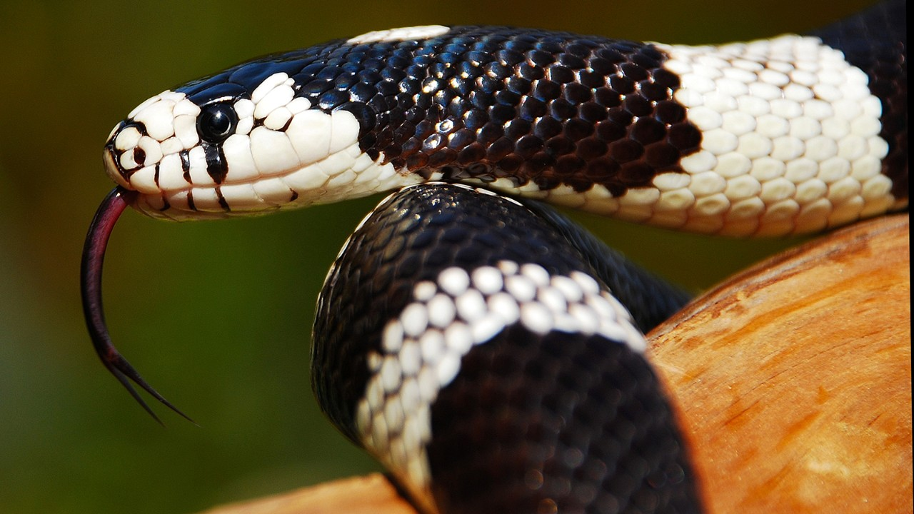
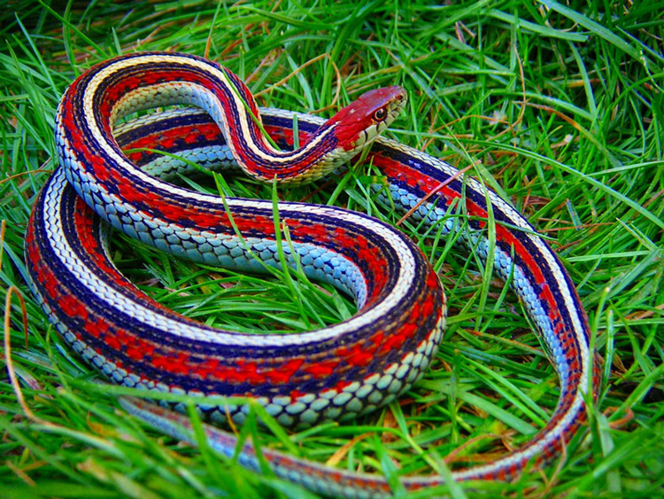

Змеи

Змеи — очень своеобразная группа животных с уникальными анатомическими, физиологическими и поведенческими чертами. Змеи составляют отдельный подотряд в отряде Чешуйчатых. На первый взгляд отличить их от ящериц легко — по наличию или отсутствию конечностей. Но на самом деле отсутствие ног не главный признак змеи, существуют также и безногие виды ящериц, которые внешне от змей трудно отличимы. Эти рептилии достигли огромного разнообразия — в мире существует 2500 видов змей!
Само название змея можно понимать двояко: в широком смысле слова змеями называют всех безногих рептилий, но в научной среде выделяют группы змей со специфическими названиями — гадюки, кобры, ужи, питоны, удавы, щитомордники, полозы, аспиды и т.д. Лишь некоторая часть видов сохранила за собой и научное название «змея». В этой статье пойдет речь именно о таких змеях в узком понимании этого слова, а другие систематические подгруппы будут освещены отдельно.
Тело змей необычайно вытянуто, его длина может превышать ширину и высоту в 10-1о0 раз. Размеры могут варьировать от 10 см до 5 м. Сама форма тела вовсе не такая уж однообразная, как это может показаться. У одних видов тело может быть укороченным и толстым, как бы вальковатым, у других умеренно длинным и широким, у третьих очень тонким, а у морских змей уплощено с боков подобно ленте. Голова имеет треугольную форму, причем кости в черепе змеи соединены очень подвижно. Особенно эластичны связки между верхней и нижней челюстями и… левая и правая половинки каждой челюсти (они у змей не соединены намертво).
Туловище змеи отличается невероятной гибкостью, этому способствует не только значительная длина тела, но и строение скелета: количество позвонков достигает 141-435, а ребра соединены со скелетом гибко. Это позволяет змеям изгибать тело волнообразно (необходимо для движения), сворачивать его в клубок (защитная реакция) и даже скручивать в узлы (необходимо при нападении). Хвост анатомически слабо отделен от туловища. Из-за вытянутой формы тела внутренние органы сильно видоизменены: все они также сильно вытянуты, парные органы расположены несимметрично, а легкое вообще только одно — правое. Правда, у примитивных видов змей может быть и левое легкое, но оно рудиментарное (недоразвитое).
Отсутствие конечностей отложило отпечаток не только на передвижение, но и на способ питания змей. А ну, попробуйте поймать добычу без рук и съесть ее! Поэтому единственным способом умертвить жертву для змеи остается яд. Змеиный яд — это высокотоксичная слюна, которая вырабатывается видоизмененными слюнными железами. Протоки этих желез открываются не прямо в рот, а в канал особых ядовитых зубов. У змеи таких зубов всего два, они могут располагаться ближе к краю или в глубине пасти (от этого зависит глубина укуса и в какой-то степени мера опасности каждого вида). Все виды змей в той или иной степени ядовиты, но у одних видов яд действует преимущественно на теплокровных животных (птиц, млекопитающих, в том числе и на человека), а у других — на холоднокровных (амфибий и рептилий). Поэтому первые виды условно называют ядовитыми, а вторые — неядовитыми. По своему действию яд бывает гемолитический (вызывает разрушение эритроцитов, нарушение свертываемости крови) или нейротоксический (поражает нервную систему, приводит к параличу, слепоте, галлюцинациям). Бывают яды смешанного действия.
Тонкое плетевидное тело мексиканской остроголовой змеи (Oxybelis aeneus) делает ее неотличимой от сухих веток.
В случае укуса змеи необходимо выдавить яд из ранки (в течение минуты после укуса), можно также отсосать и сплюнуть яд, но только в том случае если у вас нет повреждений в ротовой полости. Спустя пару минут после укуса эти меры уже неэффективны. В любом случае укушенного необходимо доставить в больницу, главное, не забыть впопыхах, как выглядела змея. Ее видовая принадлежность крайне важна для назначения противозмеиной сыворотки. В пути пострадавшему надо обеспечить полный психологический и физический покой, нужно давать тонизирующее питье (чай). А вот перевязывать укушенную конечность не стоит, это не препятствует всасыванию яда, но запросто может привести к токсическому поражению тканей. Помните, паника и страх вредны, поскольку учащают сердцебиение, а значит способствуют скорейшему распространению яда в крови! Кстати, ни один вид змей не обладает иммунитетом к собственному яду, если змее подкожно уколоть ее же собственный яд она погибнет точно так же, как и ее жертва.
У змей весьма своеобразные органы чувств: наружных ушей нет, поэтому они практически глухи, зато змеи отлично ощущают малейшие вибрации почвы, что часто воспринимается наблюдателями как способность «слышать» шаги; зрение довольно слабое, змеи лучше всего видят подвижную добычу; вкуса как такового у них нет вообще — змеи не различают вкус пищи, да и заглатывают ее целиком. Зато у них прекрасно развито обоняние, причем обонятельные рецепторы располагаются не только в ноздрях, но и на языке. Сам язык устроен очень своеобразно: он имеет раздвоенный конец и рецепторы, расположенные на разных концах, воспринимают молекулы запаха независимо друг от друга. Это позволяет змее очень точно определять положение жертвы по запаху, по этой же причине змеи постоянно высовывают язык, так они нюхают.
Кроме того, некоторые виды змей имеют на конце морды особые ямки, работающие как термолокаторы. То есть змея ощущает разницу в температуре окружающих предметов, причем ощущает настолько точно, что буквально «видит» окружающий мир как в тепловизоре. Такое уникальное чувство связано с охотой на теплокровных животных. Часто можно слышать, будто глаза змей лишены век, поэтому они не моргают. Но это правильно лишь отчасти. На самом деле веки у змей есть, но они срослись в прозрачную пленку, закрывающую глаз, поэтому змея действительно не моргает. Снаружи тело змей покрыто чешуей, размеры и форма которой варьируют у разных видов. У гремучих змей чешуйки на конце хвоста образуют своего рода «погремушку», которая издает треск, когда змея трет кончиком хвоста о туловище. Это защитная реакция, направленная на отпугивание копытных животных, которые могут растоптать змею. Помимо «погремушек» змеи могут шипеть, с силой выдыхая воздух. Однако шипение единственный звук издаваемый змеями, в остальном они безголосы (очевидно, потому что глухи).
Посмотреть защитную реакцию бриллиантовой гремучей змеи (бриллиантового гремучника).
С чешуей связана еще одна особенность змей — линька. Дело в том, что отдельные чешуйки сменяются у них не последовательно, а одновременно, поэтому змея избавляется от старой кожи, снимая ее чулком. Кожа всегда трескается на морде, а потом слазит, выворачиваясь наружу, такую сброшенную кожу называют выползком. Окраска змей чрезвычайно разнообразна: у видов умеренного пояса она обычно невзрачная (серая, коричневая, черная), тропические виды, наоборот, раскрашены очень ярко, у них не редкость встретить зеленые, красные, желтые цвета. Окраска бывает одноцветной или рисунчатой (обычно это пятна или поперечные полосы). Окраска может выполнять как маскирующую, так и предупредительную роль.
Распространены змеи по всему земному шару, кроме Антарктиды. Подавляющее большинство видов встречается в тропиках, в умеренной зоне их количество совсем невелико. Ядовитые виды также преимущественно сконцентрированы на юге. Впрочем, есть на Земле уголки, где змей нет совсем — это удаленные океанические острова (Канарские, Мадейра, о-ва Полинезии, Новая Зеландия). Змеи заселяют все виды ландшафтов: леса, горы, степи, пустыни, болота, открытые моря и океаны. Различные виды занимают разные экологические ниши, например, в лесу змеи могут обитать в лесной подстилке или в кронах деревьев. Все виды змей одиночные животные, которые образуют скопления только во время спаривания или зимовки. Активность разных видов различна: большинство предпочитает охотиться днем, но есть змеи активные в сумерках (преимущественно древесные виды), южные змеи активны круглый год, виды умеренного пояса на зиму залегают в спячку.
Способы передвижения змей очень разнообразны. Большинство видов ползают волнообразно изгибая тело, при этом скорость может достигать 3-15 км/ч. Все виды змей также прекрасно лазают по неровным поверхностям (веткам, стволам, камням). Змеи могут совершать короткие броски (при атаке, например), способны зарываться в землю или песок (только пустынные виды). Самый необычный способ передвижения у эфы. Эта змея изгибает тело перпендикулярно направлению движения, поэтому ползает боком. Манера охоты также может быть разной. Многие виды предпочитают сидеть в засаде неподвижно или медленно подкрадываться к жертве ползком. Некоторые активно обследуют окрестности с ходу нападая на зазевавшуюся добычу. В любом случае атака заканчивается резким броском и укусом, после чего змея… отпускает жертву. Не имея конечностей, она не может умертвить добычу моментально и полагается на силу своего яда. А он действует превосходно, обычно жертва успевает убежать лишь на несколько метров, после чего змея находит парализованное животное по запаху и проглатывает его. При поимке некоторые змеи помогают себе, обвивая добычу кольцами своего тела.
Все змеи абсолютные хищники и питаются исключительно животными, но разные виды специализируются на разной добыче. Мелкие змеи питаются только насекомыми и мелкими позвоночными (грызунами, лягушками, ящерицами), крупные могут охотиться на кроликов, копытных, морские змеи охотятся на рыбу, древесные виды отдают предпочтение птицам. Ряд видов имеет очень узкую пищевую специализацию, например ошейниковые змеи питаются исключительно моллюсками, а королевские змеи предпочитают нападать на… змей!
Пожалуй, самый необычный рацион у яичной змеи — она питается исключительно яйцами наземногнездящихся птиц и не нападает на животных. Для поедания яиц у этой змеи есть специальный костный выступ в гортани, сначала змея заглатывает яйцо целиком, затем проталкивает его в пищевод, по пути в который оно напарывается на выступ и трескается. Содержимое яйца змея глотает, а скорлупу выплевывает. Кстати, змеи не кровожадны и едят мало относительно своей массы тела. Это связано с их холоднокровностью и низким уровнем обмена веществ. По этой же причине они отлично переносят голод, известны случаи обитания змей на островах, которые посещаются птицами раз в году. За короткий гнездовой период змеи успевают поохотится на птиц и следующие 6-9 месяцев голодают.
Тропические виды не имеют определенного сезона размножения, северные спариваются весной. В брачный период самцы находят самок по запаху, после чего пара устраивает брачный танец: змеи высоко поднимают переднюю часть тела и обвивают шеями друг друга, в этот период они очень агрессивны.
При спаривании змеи образуют клубок, а затем расползаются в разные стороны навсегда. Родители не проявляют ни малейшего интереса к потомству. Большинство змей откладывает яйца, но морские змеи, например, перешли к живорождению. У них яйца задерживаются в яйцеводах самки до полного развития зародыша, после чего она рожает живых детенышей. У некоторых видов этих рептилий обнаружены даже признаки истинного живорождения, то есть зародыши связаны с организмом матери тонкой сеткой кровеносных сосудов (аналог плаценты млекопитающих).
Змеи откладывают яйца в укромных прогреваемых местах: в пнях, под корнями и камнями. Иногда несколько самок могут отложить яйца в одном месте (до нескольких сотен штук). Время развития яиц зависит от температуры и длится в среднем 1-2 месяца. Новорожденные змееныши полностью самостоятельны и уже имеют яд, но из-за крошечных размеров охотятся поначалу только на насекомых. Живут разные виды змей от 5 до 15 лет.
Несмотря на грозное оружие — яд, змеи сами часто становятся жертвами хищников. Дело в том что многие животные молниеносно убивают змей так, что те не успевают применить свой яд для защиты. Так, на змей могут охотиться орлы, цапли, аисты, леопарды, кабаны, ягуары, сурикаты, крокодилы. Большими любителями змей являются ежи, они имеют иммунитет к яду и защищены от укусов колючками. Некоторые животные хоть и не имеют иммунитета к яду, специализируются преимущественно на питании змеями: птица-секретарь, змееяд, мангусты. Их тактика сводится к отвлечению внимания рептилии ложными выпадами, а затем умерщвлению жертвы точным укусом (ударом) в голову. Люди тоже иногда охотятся на змей, например, в Китае и странах Юго-Восточной Азии их используют в пищу, а в остальных странах добывают ради красивой кожи, которая находит применение в галантерейной промышленности. Для защиты змеи используют разные тактики: одни полагаются на маскирующую окраску, другие предупреждают шипением, движениями хвоста (гремучие змеи), приподыманием передней части тела, наконец, в случае крайней опасности змея делает ложный выпад и только в том случае, если это не помогает, кусает. Вопреки предрассудкам змеи не кусают всех подряд, яд они берегут для добывания пищи (накапливается он в железах относительно медленно). Некоторые виды прибегают к еще большей хитрости. Например, королевская змея совершенно безвредна, но ее окраска очень похожа на окраску смертельно ядовитого кораллового аспида. Такая имитация безобидным видом опасного называется мимикрией. Ошейниковые змеи в случае опасности притворяются мертвыми, очень натуралистично выворачиваясь вверх брюхом.
Пожалуй, не найти такого животного, которое бы вызывало у людей столько негативных эмоций, как змея. Эти рептилии практически у всех народов считаются символами зла, лжи, коварства, лицемерия, предательства. Откуда же взялось такое отношение? На первый взгляд все очень просто — змеи ядовиты и представляют смертельную опасность для человека. Но змеи никогда не охотятся на человека целенаправленно (им попросту не по зубам такая «добыча»), а даже если и кусают, то только в порядке самозащиты, наконец, не все виды ядовиты. К тому же у людей немало и других врагов-конкурентов в природе, но прочие хищники вызывают скорее уважение. Вероятно, такое отношение к змеям связано с непредсказуемостью встреч с ними: змею трудно заметить, практически невозможно услышать, они никак не дают знать о своем приближении. Именно поэтому внезапные встречи со змеями часто оборачиваются паникой и несчастными случаями. Кстати, в тех странах, где змеи многочисленны, отношение к ним гораздо спокойнее.
Несмотря на то, что в южных странах укусы и гибель от ядовитых змей нередки, они приносят и пользу человеку. Тот же змеиный яд, который может быть смертельным, способен подарить человеку жизнь, ведь противозмеиную сыворотку изготавливают с помощью… змеиного яда. Эта сыворотка спасла не меньше жизней, чем унесли змеиные укусы. Кроме того активные компоненты яда используются для производства лекарств и тестовых компонентов, необходимых для диагностики неврологических болезней, гемофилии и других нарушений свертываемости крови. Для получения яда змей отлавливают и содержат в серпентариях. Многие ошибочно полагают, что серпентарии это змеиные фермы, где змей разводят. На самом деле там только содержат змей, отловленных в природе, потому что в неволе большинство видов не размножается. Между прочим век таких пленников недолог, после нескольких заборов яда змея погибает, поэтому так важно охранять змей, и ядовитых в том числе! А для того, чтобы обезопасить себя достаточно знать несколько нехитрых правил: при посещении мест возможного скопления змей внимательно смотреть под ноги (змеи могут скрываться в высокой траве); носить одежду, закрывающую ноги; не ощупывать голыми руками закрытые места (дупла, пространство под камнями и пнями); при встрече со змеей не преследовать ее, не дразнить, не пытаться убить.
Справедливости ради стоит заметить, что не везде змеи презираемы. В некоторых культурах они почитались как символы мудрости, знаний, врачевания (Древний Египет, Таиланд, Древняя Греция), да и в современном мире предрассудки в отношении этих животных уже не в моде. Сейчас змеи все чаще становятся обитателями домашних террариумов, их содержание потребует некоторых знаний, но точно не отнимет много времени. Возможно, не каждому удастся преодолеть неприятное впечатление, но научится уважать и любить змей (хотя бы на расстоянии) нужно. Они приносят немалую пользу, уничтожая вредных грызунов, а численность всех видов постепенно снижается. Поэтому если вы встретите змею (вероятнее всего это будет неядовитый уж) — не убивайте ее!
Вверх